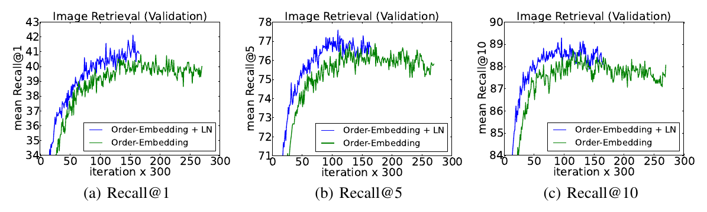
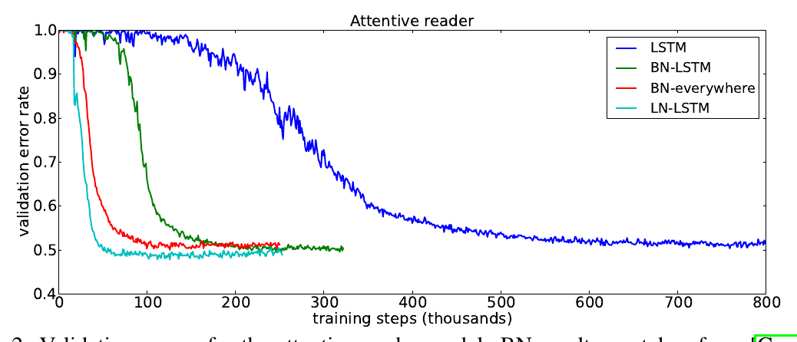
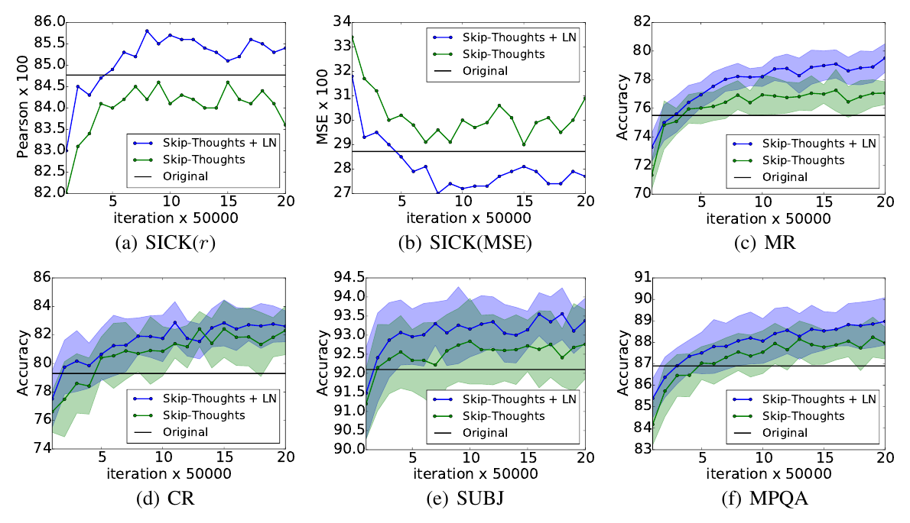
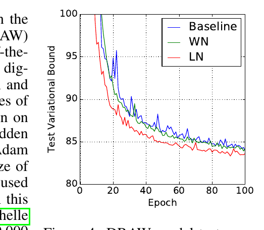
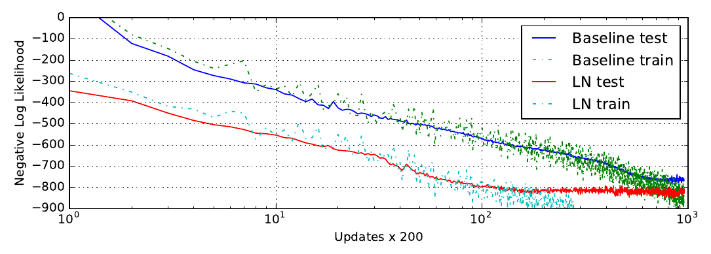
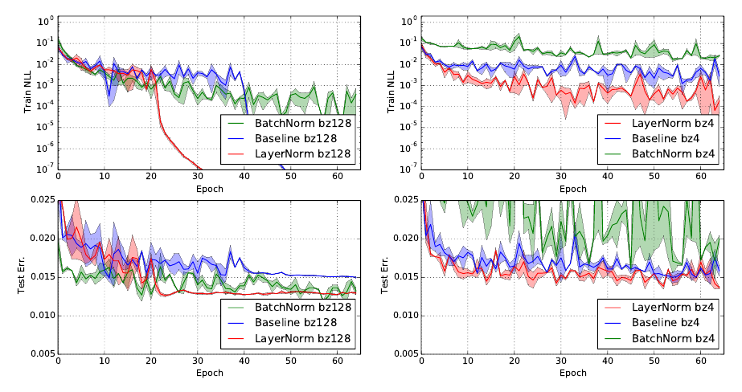

层归一化Layer Normalization
训练当时最好的深度神经网络在计算上很昂贵。减少训练时间的一条途径是归一化神经元的活跃值。近来提出的一项技术叫批归一化，它使用一个小批量训练样本上「神经元净输入」的分布来计算均值与方差，再用它们把每个训练样本上该神经元的净输入归一化。这显著缩短了前馈神经网络的训练时间。然而批归一化的效果依赖小批量大小，而且如何把它用于循环神经网络并不显然。本文把批归一化「转置」为层归一化：归一化所用的均值与方差由单个训练样本上、某一层所有神经元的净输入计算得到。与批归一化一样，我们也给每个神经元各自的自适应偏置与增益，它们施加在归一化之后、非线性之前。与批归一化不同，层归一化在训练与测试时的计算完全相同。它也易于应用到循环神经网络，只需在每个时间步单独计算归一化统计量。层归一化在稳定循环网络的隐藏状态动态方面非常有效。经验上我们表明，层归一化相对此前发表的技术能大幅缩短训练时间。
1 引言
用某种随机梯度下降训练的深度神经网络，在计算机视觉（Krizhevsky 等, 2012）与语音处理（Hinton 等, 2012）的各种监督学习任务上被证明大幅优于此前的方法。但最好的深度神经网络往往需要训练很多天。可以通过在不同机器上为不同子集的训练样本计算梯度、或把神经网络本身切分到多台机器上来加速学习（Dean 等, 2012），但这可能需要大量通信与复杂软件，而且随着并行度提高，收益往往迅速递减。另一条正交的途径是修改神经网络前向传播中的计算，让学习更容易。近来有人提出批归一化（Ioffe & Szegedy, 2015），通过在深度神经网络中加入额外的归一化阶段来减少训练时间。该归一化用每个净输入在训练数据上的均值与标准差把它标准化。用批归一化训练的前馈神经网络即使只用简单 SGD 也收敛更快。除了缩短训练时间，来自批量统计量的随机性在训练中还起到正则化作用。
尽管简单，批归一化需要维护净输入统计量的滑动平均。在深度固定的前馈网络中，为每个隐藏层分别存储统计量是直接的。然而循环神经网络（RNN）中循环神经元的净输入常常随序列长度变化，因此把批归一化用于 RNN 似乎需要为不同时间步使用不同的统计量。此外，批归一化无法用于在线学习任务，也无法用于小批量必须很小的超大规模分布式模型。
本文提出层归一化，一种简单的归一化方法，用来改善多种神经网络模型的训练速度。与批归一化不同，所提方法直接从隐藏层内各神经元的净输入估计归一化统计量，因此归一化不会在训练样本之间引入任何新的依赖。我们表明层归一化对 RNN 效果良好，并改善了若干既有 RNN 模型的训练时间与泛化性能。
2 背景
前馈神经网络是从输入模式 x 到输出向量 y 的非线性映射。考虑深度前馈神经网络中的第 l 个隐藏层，令 al 为该层各神经元净输入（summed inputs）的向量表示。净输入通过权重矩阵 Wl 与自下而上的输入 hl 做线性投影得到：
其中 f(·) 是逐元素非线性函数，wil 是指向第 i 个隐藏单元的输入权重，bil 是标量偏置参数。神经网络中的参数用基于梯度的优化算法学习，梯度由反向传播计算。
深度学习的一个挑战是：某一层权重的梯度高度依赖于上一层神经元的输出，尤其当这些输出以高度相关的方式变化时。批归一化（Ioffe & Szegedy, 2015）被提出来以减少这种不受欢迎的「协变量偏移」。该方法在训练样本维度上对每个隐藏单元的净输入做归一化。具体而言，对第 l 层第 i 个净输入，批归一化按其在数据分布下的方差重新缩放净输入
其中 āil 是第 l 层第 i 个隐藏单元归一化后的净输入，gi 是一个增益参数，在非线性激活函数之前对归一化激活值做缩放。注意期望是在整个训练数据分布下取的。通常无法精确计算式 (2) 中的期望，因为那需要用当前权重集对整个训练集做前向传播。取而代之，μ 与 σ 用当前小批量的经验样本估计。这给小批量大小带来了约束，也难以用于循环神经网络。
3 层归一化
现在我们考虑层归一化方法，它的设计目标是克服批归一化的缺点。
注意，某一层输出的变化往往会引发下一层净输入高度相关的改变，尤其在使用 ReLU 单元时——它们的输出可能变化很大。这说明，「协变量偏移」问题可以通过固定每一层内净输入的均值与方差来缓解。因此，我们在同一层的所有隐藏单元上计算层归一化统计量：
其中 H 表示一层中隐藏单元的数量。式 (2) 与式 (3) 的差别在于：在层归一化下，一层中所有隐藏单元共享同样的归一化项 μ 与 σ，但不同训练样本有不同的归一化项。与批归一化不同，层归一化不对小批量大小施加任何约束，可以用在批量大小为 1 的纯在线场景中。
3.1 层归一化的循环神经网络
近来的序列到序列模型（Sutskever 等, 2014）使用紧凑的循环神经网络来解决自然语言处理中的序列预测问题。NLP 任务中，不同训练样本的句子长度不同是常见情况。这在 RNN 中容易处理，因为每个时间步用的是同样的权重。但当我们以显然的方式把批归一化用于 RNN 时，就需要为序列中的每个时间步计算并存储单独的统计量。如果测试序列比任何训练序列都长，这就有问题。层归一化没有这个问题，因为它的归一化项只依赖当前时间步该层的净输入。它也只有一组在所有权重时间步共享的增益与偏置参数。
在标准 RNN 中，循环层的净输入由当前输入 xt 与上一时刻隐藏状态向量 ht−1 计算：at = Whhht−1 + Wxhxt。层归一化的循环层用类似式 (3) 的额外归一化项对其激活值重新中心化与重新缩放：
其中 Whh 是循环的隐藏到隐藏权重，Wxh 是自下而上的输入到隐藏权重。⊙ 表示两个向量的逐元素乘法。b 与 g 定义为与 ht 同维的偏置与增益参数。
在标准 RNN 中，循环单元净输入的平均幅度倾向于在每个时间步不断增大或缩小，从而导致梯度爆炸或消失。在层归一化的 RNN 中，归一化项使它对「整层所有净输入的整体重新缩放」不变，从而带来稳定得多的隐藏到隐藏动态。
4 相关工作
批归一化此前已被扩展到循环神经网络（Laurent 等, 2015; Amodei 等, 2015; Cooijmans 等, 2016）。此前工作（Cooijmans 等, 2016）表明，循环批归一化的最好性能来自为每个时间步保留独立的归一化统计量。作者还表明，把循环批归一化层中的增益参数初始化为 0.1，会显著影响模型的最终性能。我们的工作也与权重归一化（Salimans & Kingma, 2016）相关。在权重归一化中，用来归一化神经元净输入的是输入权重的 L2 范数，而不是方差。使用期望统计量的权重归一化或批归一化，等价于对原前馈神经网络做另一种参数化。ReLU 网络中的重参数化在 Path-normalized SGD（Neyshabur 等, 2015）中被研究过。而我们提出的层归一化并不是对原神经网络的重参数化。因此，层归一化模型具有与其他方法不同的不变性性质，我们将在下一节研究它们。
5 分析
本节我们研究不同归一化方案的不变性性质。
5.1 对权重与数据变换的不变性
所提出的层归一化与批归一化、权重归一化有关。尽管它们计算归一化标量的方式不同，这些方法都可以概括为：用两个标量 μ 与 σ 归一化神经元的净输入 ai。它们也为每个神经元在归一化之后学习一个自适应偏置 b 与增益 g。
注意，对层归一化与批归一化，μ 与 σ 分别按式 (2) 与式 (3) 计算。在权重归一化中，μ 为 0，σ = ‖w‖2。
| 权重矩阵重缩放 | 权重矩阵重中心化 | 权重向量重缩放 | 数据集重缩放 | 数据集重中心化 | 单个训练样本重缩放 | |
| 批归一化 | 不变 | 否 | 不变 | 不变 | 不变 | 否 |
| 权重归一化 | 不变 | 否 | 不变 | 否 | 否 | 否 |
| 层归一化 | 不变 | 不变 | 否 | 不变 | 否 | 不变 |
表 1 各归一化方法的不变性性质。
表 1 凸显了三种归一化方法的如下不变性结果。
权重重缩放与重中心化：首先注意，在批归一化与权重归一化下，对单个神经元输入权重 wi 做任何重缩放，都不影响该神经元归一化后的净输入。准确地说，在批归一化与权重归一化下，若权重向量被缩放 δ 倍，两个标量 μ 与 σ 也会被缩放 δ 倍，归一化后的净输入在缩放前后保持不变。因此批归一化与权重归一化对权重的重缩放不变。相反，层归一化对单个权重向量的各自缩放不具有不变性；它不变的是「整个权重矩阵的缩放」以及「权重矩阵中所有输入权重同时平移」。设有两组模型参数 θ、θ′，其权重矩阵 W 与 W′ 相差一个缩放因子 δ，且 W′ 中所有输入权重还平移了一个常数向量 γ，即 W′ = δW + 1γ⊤。在层归一化下，这两个模型实际计算出相同的输出：
= f( gσ (Wx − μ) + b ) = h.
注意，如果归一化只施加在权重之前的输入上，模型对权重的重缩放与重中心化就不具有不变性。
数据重缩放与重中心化：我们可以通过验证「神经元的净输入在这些变化下保持不变」，来说明所有归一化方法都对数据集的重缩放不变。进一步地，层归一化对单个训练样本的重缩放也不变，因为式 (3) 中的归一化标量 μ 与 σ 只依赖当前输入数据。设 x′ 是把 x 重缩放 δ 倍得到的新数据点，则我们有
容易看出，在层归一化下，重缩放单个数据点不会改变模型的预测。与层归一化中权重矩阵的重中心化类似，我们也可以说明批归一化对数据集的重中心化不变。
5.2 学习过程中参数空间的几何
我们已经考察了模型预测在参数重中心化与重缩放下的不变性。然而即使模型表达的是同一个底层函数，不同的参数化下学习行为可能非常不同。本节我们通过参数空间的几何与流形来分析学习行为。我们表明，归一化标量 σ 能隐式地降低学习率，并使学习更稳定。
5.2.1 黎曼度量
统计模型中的可学习参数构成一个光滑流形，它由模型所有可能的输入-输出关系组成。对输出为概率分布的模型，衡量该流形上两点之间间隔的一种自然方式是它们模型输出分布之间的 KL 散度。在 KL 散度度量下，参数空间是一个黎曼流形。
黎曼流形的曲率完全由它的黎曼度量刻画，其二次型记为 ds2，即参数空间某点处切空间中的无穷小距离。直观地说，它衡量参数空间沿某个切方向变化时模型输出的变化。KL 下的黎曼度量此前已被研究（Amari, 1998），并表明可以用费舍尔信息矩阵做二阶泰勒展开很好地近似：
其中 δ 是对参数的小改变。上述黎曼度量给出了参数空间的一种几何视角。下面关于黎曼度量的分析，为「归一化方法为何有助于训练神经网络」提供了一些洞见。
5.2.2 归一化广义线性模型的几何
我们把几何分析聚焦在广义线性模型上。以下分析的结果，可以通过对费舍尔信息矩阵做块对角近似（每块对应单个神经元的参数），方便地用于理解深度神经网络。
广义线性模型（GLM）可以看作用一个权重向量 w 与标量偏置 b 对指数族中的输出分布做参数化。为与前文一致，GLM 的对数似然可以用净输入 a 写成：
其中 f(·) 是传递函数，对应神经网络中的非线性；f′(·) 是传递函数的导数；η(·) 是实值函数；c(·) 是对数配分函数；φ 是缩放输出方差的常数。假定用一个 H 维输出向量 y = [y1, …, yH] 由 H 个独立 GLM 建模，且 log P(y|x; W, b) = ΣHi=1 log P(yi|x; wi, bi)。设 W 是以各 GLM 权重向量为行的权重矩阵，b 为长度 H 的偏置向量，vec(·) 表示 Kronecker 向量算子。多维 GLM 关于其参数 θ = [w1⊤, b1, …, wH⊤, bH]⊤ = vec([W, b]⊤) 的费舍尔信息矩阵，就是数据特征与输出协方差矩阵的期望 Kronecker 积：
x⊤ 1 ] ].
我们把归一化方法通过 μ 与 σ 作用于原模型中的净输入 a，从而得到归一化 GLM。不失一般性，记 F̄ 为带额外增益参数的归一化多维 GLM 下的费舍尔信息矩阵，参数为 θ = vec([W, b, g]⊤)：
[ (gigj/(σiσj))χiχj⊤ χigi/σi χigi(aj−μj)/(σiσj)
χj⊤gj/σj 1 (aj−μj)/σj
χj⊤gj(ai−μi)/(σiσj) (ai−μi)/σi (ai−μi)(aj−μj)/(σiσj) ] ]
通过权重向量增长实现的隐式学习率衰减：注意，与标准 GLM 相比，沿权重向量 wi 方向的分块 F̄ij 被增益参数与归一化标量 σi 缩放了。如果权重向量 wi 的范数变大两倍，即使模型输出保持不变，费舍尔信息矩阵也会不同：沿 wi 方向的曲率会改变 1/2 倍，因为 σi 也会变大两倍。结果，对归一化模型中相同的参数更新，权重向量的范数实际上控制着该权重向量的学习率。在学习过程中，大范数的权重向量更难改变方向。因此，归一化方法对权重向量有一种隐式的「早停」效应，有助于让学习稳定地趋向收敛。
学习输入权重的幅度：在归一化模型中，输入权重的幅度由增益参数显式参数化。我们比较「更新归一化 GLM 中的增益参数」与「更新原参数化下等价权重的幅度」时模型输出的变化。F̄ 中沿增益参数的方向刻画了输入权重幅度的几何。我们表明：标准 GLM 中沿输入权重幅度的黎曼度量会被其输入的范数缩放，而批归一化与层归一化模型学习增益参数只依赖预测误差的幅度。因此在归一化模型中学习输入权重的幅度，比在标准模型中更不受输入及其参数缩放的影响。详细推导见附录。
6 实验结果
我们在 6 个任务上做层归一化的实验，重点在循环神经网络：图像-句子排序、问答、上下文语言建模、生成建模、手写序列生成与 MNIST 分类。除另有说明，实验中层归一化的默认初始化是把自适应增益设为 1、偏置设为 0。
6.1 图像与语言的序嵌入
本实验中，我们把层归一化应用到 Vendrov 等（2016）近来提出的序嵌入模型上，用于学习图像与句子的联合嵌入空间。我们沿用 Vendrov 等（2016）的实验协议，并修改其公开代码以加入层归一化1，代码基于 Theano（Team 等, 2016）。来自 Microsoft COCO 数据集（Lin 等, 2014）的图像与句子被嵌入到公共向量空间：用 GRU（Cho 等, 2014）编码句子，用预训练 VGG ConvNet（Simonyan & Zisserman, 2015）（10-crop）的输出编码图像。序嵌入模型把图像与句子表示为二级偏序关系，并用非对称打分函数取代 Kiros 等（2014）使用的余弦相似度。
我们训练了两个模型：基线序嵌入模型，以及把层归一化施加到 GRU 上的同一模型。每 300 次迭代，我们在留出验证集上计算 Recall@K（R@K），并在 R@K 改善时保存模型。性能最好的模型随后在 5 个独立的测试集上评估（每个含 1000 张图像与 5000 条描述），报告其平均结果。两个模型都用 Adam（Kingma & Ba, 2014），初始超参数相同，并且都与 Vendrov 等（2016）采用相同的架构选择。层归一化如何施加于 GRU，见附录。

图 1 展示了有/无层归一化两个模型的验证曲线，我们画出图像检索任务上的 R@1、R@5 与 R@10。我们观察到，层归一化在所有指标上都带来逐迭代的加速，并且只用了基线模型 60% 的时间就收敛到其最好的验证模型。表 2 报告了测试集结果，可以看出层归一化还带来相对原模型更好的泛化。我们报告的结果是 RNN 嵌入模型的最好水平，只有 Wang 等（2016）的结构保持模型在该任务上报告了更好的结果；不过他们是在不同条件下评估的（用 1 个测试集而不是 5 个的平均），因此不能直接比较。
| MSCOCO | ||||||||
| 模型 | 描述检索 | 图像检索 | ||||||
| R@1 | R@5 | R@10 | 平均秩 | R@1 | R@5 | R@10 | 平均秩 | |
| Sym（Vendrov 等, 2016） | 45.4 | 88.7 | 5.8 | 36.3 | 85.8 | 9.0 | ||
| OE（Vendrov 等, 2016） | 46.7 | 88.9 | 5.7 | 37.9 | 85.9 | 8.1 | ||
| OE（我们） | 46.6 | 79.3 | 89.1 | 5.2 | 37.8 | 73.6 | 85.7 | 7.9 |
| OE + LN | 48.5 | 80.6 | 89.8 | 5.1 | 38.9 | 74.3 | 86.3 | 7.6 |
表 2 描述检索与图像检索在 5 个测试划分上的平均结果。R@K 为 Recall@K（越高越好），平均秩为 mean rank（越低越好）。Sym 对应对称基线，OE 表示序嵌入。
6.2 教机器阅读与理解
为了把层归一化与近来提出的循环批归一化（Cooijmans 等, 2016）相比，我们在 Hermann 等（2015）提出的 CNN 语料上训练一个单向的「专注读者」（attentive reader）模型。这是一个问答任务：关于一段文字的问题描述，必须通过填空来回答。数据经过匿名化处理，实体被替换为随机 token，以避免退化解；这些 token 在训练与评估中保持一致地置换。我们沿用 Cooijmans 等（2016）的实验协议，并修改其公开代码以加入层归一化2（基于 Theano（Team 等, 2016））。我们获得了 Cooijmans 等（2016）使用的预处理数据集；它与 Hermann 等（2015）的原始实验不同之处在于，每段文字被限制为 4 句。在 Cooijmans 等（2016）中使用了两种循环批归一化变体：一种只在 LSTM 内施加 BN，另一种在模型各处都施加 BN。在我们的实验中，只在 LSTM 内施加层归一化。

该实验的结果见图 2。我们观察到，层归一化不仅训练更快，而且相对基线与两个 BN 变体都收敛到更好的验证结果。Cooijmans 等（2016）中主张，BN 中的尺度参数必须仔细选择，其实验中设为 0.1。我们分别用 1.0 与 0.1 的尺度初始化试验了层归一化，发现前者表现明显更好。这说明层归一化不像循环 BN 那样对初始尺度敏感3。
6.3 Skip-thought 向量
Skip-thoughts（Kiros 等, 2015）是 skip-gram 模型（Mikolov 等, 2013）的推广，用于学习无监督的分布式句子表示。给定连续的文本，一个句子用编码 RNN 编码，解码 RNN 用来预测前后相邻的句子。Kiros 等（2015）表明该模型能产生通用的句子表示，在若干任务上不经微调就有良好表现。但训练该模型很耗时，需要训练数天才能产生有意义的结果。
本实验中我们确定层归一化能在多大程度上加速训练。使用 Kiros 等（2015）的公开代码4，我们在 BookCorpus 数据集（Zhu 等, 2015）上训练两个模型：一个用层归一化，一个不用。这些实验用 Theano（Team 等, 2016）完成。我们遵循 Kiros 等（2015）的实验设置，用相同的超参数训练一个 2400 维的句子编码器。考虑到所用状态的规模，可以设想层归一化的逐迭代更新会比不用时更慢。但我们发现，只要使用 CNMeM5，两个模型之间没有显著差异。我们每 50,000 次迭代为两个模型保存检查点，并在五个任务上评估其性能：语义相关性（SICK）（Marelli 等, 2014）、影评情感（MR）（Pang & Lee, 2005）、客户产品评论（CR）（Hu & Liu, 2004）、主观/客观分类（SUBJ）（Pang & Lee, 2004）以及意见极性（MPQA）（Wiebe 等, 2005）。我们画出两个模型在每个检查点上、所有任务上的性能，以确定 LN 是否能提高性能增长的速率。

实验结果如图 3 所示。我们观察到，施加层归一化既带来相对基线的加速，也在 1M 次迭代后给出更好的最终结果（见表 3）。我们还让带层归一化的模型总共训练一个月，结果除一个任务外在所有任务上都有进一步提升。我们注意到，原始报告结果与我们的结果之间的性能差异，很可能是因为公开代码没有在解码器的每个时间步做条件化，而原模型做了。
| 方法 | SICK(r) | SICK(ρ) | SICK(MSE) | MR | CR | SUBJ | MPQA |
| 原始（Kiros 等, 2015） | 0.848 | 0.778 | 0.287 | 75.5 | 79.3 | 92.1 | 86.9 |
| 我们 | 0.842 | 0.767 | 0.298 | 77.3 | 81.8 | 92.6 | 87.9 |
| 我们 + LN | 0.854 | 0.785 | 0.277 | 79.5 | 82.6 | 93.4 | 89.0 |
| 我们 + LN † | 0.858 | 0.788 | 0.270 | 79.4 | 83.1 | 93.7 | 89.3 |
表 3 Skip-thoughts 结果。前两列是 Pearson 与 Spearman 相关系数，第三列是均方误差，其余为分类准确率。除 MSE 外所有指标都是越高越好。我们的模型训练了 1M 次迭代，标 † 的例外，它训练了一个月（约 1.7M 次迭代）。
6.4 用 DRAW 建模二值化 MNIST
我们还在 MNIST 数据集上做了生成建模的实验。深度循环注意写手（DRAW）（Gregor 等, 2015）此前在建模 MNIST 数字分布上达到了当时最好性能。该模型使用可微注意机制与循环神经网络，逐步生成图像的各个部分。我们在一个使用 64 个 glimpse 与 256 个 LSTM 隐藏单元的 DRAW 模型上评估层归一化的效果。模型用 Adam（Kingma & Ba, 2014）优化器的默认设置训练，小批量大小为 128。此前关于二值化 MNIST 的论文用了各种训练协议来生成数据集。本实验我们使用 Larochelle & Murray（2011）的固定二值化。数据集被划分为 50,000 张训练、10,000 张验证与 10,000 张测试图像。

图 4 展示了前 100 个 epoch 的测试变分下界。它凸显了施加层归一化带来的加速收益：层归一化的 DRAW 收敛速度几乎是基线模型的两倍。200 个 epoch 之后，基线模型在测试数据上收敛到变分对数似然 82.36 nats，而层归一化模型取得 82.09 nats。
6.5 手写序列生成
此前的实验主要考察 NLP 任务上的 RNN，其序列长度在 10 到 40 之间。为展示层归一化在更长序列上的有效性，我们用 IAM 在线手写数据库（Liwicki & Bunke, 2005）做手写生成任务。IAM-OnDB 由取自 221 位不同书写者的手写行组成。给定输入字符串，目标是预测白板上对应手写行的一系列 x、y 笔坐标。总共有 12179 条手写行序列。输入字符串通常超过 25 个字符，而平均手写行长度约 700。
我们使用与 Graves（2013）第 5.2 节相同的模型架构。该架构包含三个隐藏层、每层 400 个 LSTM 单元，输出层产生 20 个二元高斯混合分量，输入层大小为 3。字符序列用 one-hot 向量编码，因此窗口向量大小为 57。窗口参数使用 10 个高斯函数的混合，需要大小为 30 的参数向量。权重总数增至约 3.7M。模型用小批量大小 8 与 Adam（Kingma & Ba, 2014）优化器训练。

小批量很小、序列又很长，这一组合使得「隐藏动态非常稳定」变得很重要。图 5 显示，层归一化收敛到与基线模型相当的对数似然，但速度快得多。
6.6 置换不变的 MNIST
除 RNN 之外，我们还考察了前馈网络中的层归一化。我们展示层归一化与批归一化在被充分研究的置换不变 MNIST 分类问题上的比较。由前面的分析可知，层归一化对输入重缩放不变，这对内部隐藏层是可取的；但对 logit 输出而言并不必要，因为预测的置信度由 logit 的尺度决定。我们只对全连接的隐藏层施加层归一化，不含最后的 softmax 层。
所有模型用 55000 个训练数据点与 Adam（Kingma & Ba, 2014）优化器训练。对小批量情形，批归一化的方差项用无偏估计量计算。图 6 的实验结果表明，层归一化对小批量大小稳健，并且相比施加在所有层上的批归一化呈现出更快的训练收敛。

6.7 卷积网络
我们也对卷积神经网络做了实验。在初步实验中，我们观察到层归一化相对无归一化的基线模型带来加速，但批归一化优于其他方法。对全连接层而言，一层中所有隐藏单元往往对最终预测做出相似的贡献，因此对某层的净输入做重中心化与重缩放效果良好。然而对卷积神经网络来说，「贡献相似」的假设不再成立。大量隐藏单元的感受野位于图像边界附近，它们很少被激活，因而与同一层中其他隐藏单元有非常不同的统计量。我们认为需要进一步研究，才能让层归一化在 ConvNet 中良好工作。
7 结论
本文提出层归一化以加速神经网络的训练。我们给出了理论分析，把层归一化的不变性性质与批归一化、权重归一化做了比较。我们表明层归一化对「单个训练样本的特征平移与缩放」不变。
经验上，我们表明循环神经网络从所提方法中获益最多，尤其是长序列与小批量的情形。
致谢
本研究由 NSERC、CFI 与 Google 的资助支持。
参考文献
按约定，参考文献条目保留英文原文，不作翻译（便于与原文及检索工具对照）。
- Alex Krizhevsky, Ilya Sutskever, and Geoffrey E Hinton. Imagenet classification with deep convolutional neural networks. In NIPS, 2012.
- Geoffrey Hinton, Li Deng, Dong Yu, George E Dahl, Abdel-rahman Mohamed, Navdeep Jaitly, Andrew Senior, Vincent Vanhoucke, Patrick Nguyen, Tara N Sainath, et al. Deep neural networks for acoustic modeling in speech recognition: The shared views of four research groups. IEEE, 2012.
- Jeffrey Dean, Greg Corrado, Rajat Monga, Kai Chen, Matthieu Devin, Mark Mao, Andrew Senior, Paul Tucker, Ke Yang, Quoc V Le, et al. Large scale distributed deep networks. In NIPS, 2012.
- Sergey Ioffe and Christian Szegedy. Batch normalization: Accelerating deep network training by reducing internal covariate shift. ICML, 2015.
- Ilya Sutskever, Oriol Vinyals, and Quoc V Le. Sequence to sequence learning with neural networks. In Advances in neural information processing systems, pages 3104–3112, 2014.
- Cesar Laurent, Gabriel Pereyra, Philémon Brakel, Ying Zhang, and Yoshua Bengio. Batch normalized recurrent neural networks. arXiv preprint arXiv:1510.01378, 2015.
- Dario Amodei, Rishita Anubhai, Eric Battenberg, Carl Case, Jared Casper, Bryan Catanzaro, Jingdong Chen, Mike Chrzanowski, Adam Coates, Greg Diamos, et al. Deep speech 2: End-to-end speech recognition in english and mandarin. arXiv preprint arXiv:1512.02595, 2015.
- Tim Cooijmans, Nicolas Ballas, César Laurent, and Aaron Courville. Recurrent batch normalization. arXiv preprint arXiv:1603.09025, 2016.
- Tim Salimans and Diederik P Kingma. Weight normalization: A simple reparameterization to accelerate training of deep neural networks. arXiv preprint arXiv:1602.07868, 2016.
- Behnam Neyshabur, Ruslan R Salakhutdinov, and Nati Srebro. Path-sgd: Path-normalized optimization in deep neural networks. In Advances in Neural Information Processing Systems, pages 2413–2421, 2015.
- Shun-Ichi Amari. Natural gradient works efficiently in learning. Neural computation, 1998.
- Ivan Vendrov, Ryan Kiros, Sanja Fidler, and Raquel Urtasun. Order-embeddings of images and language. ICLR, 2016.
- The Theano Development Team, Rami Al-Rfou, Guillaume Alain, Amjad Almahairi, Christof Angermueller, Dzmitry Bahdanau, Nicolas Ballas, Frédéric Bastien, Justin Bayer, Anatoly Belikov, et al. Theano: A python framework for fast computation of mathematical expressions. arXiv preprint arXiv:1605.02688, 2016.
- Tsung-Yi Lin, Michael Maire, Serge Belongie, James Hays, Pietro Perona, Deva Ramanan, Piotr Dollár, and C Lawrence Zitnick. Microsoft coco: Common objects in context. ECCV, 2014.
- Kyunghyun Cho, Bart Van Merriënboer, Caglar Gulcehre, Dzmitry Bahdanau, Fethi Bougares, Holger Schwenk, and Yoshua Bengio. Learning phrase representations using rnn encoder-decoder for statistical machine translation. EMNLP, 2014.
- Karen Simonyan and Andrew Zisserman. Very deep convolutional networks for large-scale image recognition. ICLR, 2015.
- Ryan Kiros, Ruslan Salakhutdinov, and Richard S Zemel. Unifying visual-semantic embeddings with multimodal neural language models. arXiv preprint arXiv:1411.2539, 2014.
- D. Kingma and J. L. Ba. Adam: a method for stochastic optimization. ICLR, 2014. arXiv:1412.6980.
- Liwei Wang, Yin Li, and Svetlana Lazebnik. Learning deep structure-preserving image-text embeddings. CVPR, 2016.
- Karl Moritz Hermann, Tomas Kocisky, Edward Grefenstette, Lasse Espeholt, Will Kay, Mustafa Suleyman, and Phil Blunsom. Teaching machines to read and comprehend. In NIPS, 2015.
- Ryan Kiros, Yukun Zhu, Ruslan R Salakhutdinov, Richard Zemel, Raquel Urtasun, Antonio Torralba, and Sanja Fidler. Skip-thought vectors. In NIPS, 2015.
- Tomas Mikolov, Kai Chen, Greg Corrado, and Jeffrey Dean. Efficient estimation of word representations in vector space. arXiv preprint arXiv:1301.3781, 2013.
- Yukun Zhu, Ryan Kiros, Rich Zemel, Ruslan Salakhutdinov, Raquel Urtasun, Antonio Torralba, and Sanja Fidler. Aligning books and movies: Towards story-like visual explanations by watching movies and reading books. In ICCV, 2015.
- Marco Marelli, Luisa Bentivogli, Marco Baroni, Raffaella Bernardi, Stefano Menini, and Roberto Zamparelli. Semeval-2014 task 1: Evaluation of compositional distributional semantic models on full sentences through semantic relatedness and textual entailment. SemEval-2014, 2014.
- Bo Pang and Lillian Lee. Seeing stars: Exploiting class relationships for sentiment categorization with respect to rating scales. In ACL, pages 115–124, 2005.
- Minqing Hu and Bing Liu. Mining and summarizing customer reviews. In Proceedings of the tenth ACM SIGKDD international conference on Knowledge discovery and data mining, 2004.
- Bo Pang and Lillian Lee. A sentimental education: Sentiment analysis using subjectivity summarization based on minimum cuts. In ACL, 2004.
- Janyce Wiebe, Theresa Wilson, and Claire Cardie. Annotating expressions of opinions and emotions in language. Language resources and evaluation, 2005.
- K. Gregor, I. Danihelka, A. Graves, and D. Wierstra. DRAW: a recurrent neural network for image generation. arXiv:1502.04623, 2015.
- Hugo Larochelle and Iain Murray. The neural autoregressive distribution estimator. In AISTATS, volume 6, page 622, 2011.
- Marcus Liwicki and Horst Bunke. Iam-ondb-an on-line english sentence database acquired from handwritten text on a whiteboard. In ICDAR, 2005.
- Alex Graves. Generating sequences with recurrent neural networks. arXiv preprint arXiv:1308.0850, 2013.
补充材料
层归一化在各实验中的应用方式
本节描述层归一化如何应用到论文的各个实验。为记号方便，我们把层归一化定义为一个映射 LN : ℝD → ℝD，带有两组自适应参数——增益 α 与偏置 β：
其中 zi 是向量 z 的第 i 个元素。
「教机器阅读与理解」与手写序列生成
这两个实验所用的基本 LSTM 方程为：
加入层归一化的版本改为：
其中 αi、βi 分别是加性（偏置）与乘性（增益）参数。每个 αi 初始化为零向量，每个 βi 初始化为全 1 向量。
序嵌入与 skip-thoughts
这两个实验使用一个门控循环单元（GRU）的变体，定义如下：
层归一化按如下方式施加：
与之前一样，αi 初始化为零向量，每个 βi 初始化为全 1 向量。
用 DRAW 建模二值化 MNIST
本实验中层归一化只施加到 LSTM 隐藏状态的输出上。加入层归一化的版本改为：
其中 α、β 分别是加性（偏置）与乘性（增益）参数。α 初始化为零向量，β 初始化为全 1 向量。
学习输入权重的幅度
下面比较「改变等价权重幅度的梯度下降更新」在归一化 GLM 与原始参数化下的差异。权重幅度在归一化模型中由增益参数显式参数化。假设有一次梯度更新把权重向量的范数改变 δg。我们可以把梯度更新投影到标准 GLM 的权重向量上。归一化模型的 KL 度量（即该梯度更新改变模型预测的程度）只依赖预测误差的幅度。具体地，在批归一化下：
在层归一化下：
= ½ δg⊤ 1φ2 𝔼x∼P(x)[ Cov(y1, y1|x)·(a1−μ)2/σ2 … Cov(y1, yH|x)·(a1−μ)(aH−μ)/σ2 ; ⋮ ⋱ ⋮ ; Cov(yH, y1|x)·(aH−μ)(a1−μ)/σ2 … Cov(yH, yH|x)·(aH−μ)2/σ2 ] δg
在权重归一化下：
而在标准 GLM 中，KL 度量与其活跃值 ai = wi⊤x 相关，既依赖当前权重也依赖输入数据。我们把第 i 个神经元的增益参数更新 δgi 投影到其在标准 GLM 中的权重向量 δgi wi‖wi‖2：
= δgiδgj2φ2 𝔼x∼P(x)[ Cov(yi, yj|x) aiaj‖wi‖2‖wj‖2 ]
因此，批归一化与层归一化模型比标准模型更不受输入及其参数缩放的影响。
图表索引
- 图 1 序嵌入的 Recall@K 曲线：R@1、R@5、R@10（6.1 节）
- 图 2 专注读者模型的验证曲线，与循环批归一化对比（6.2 节）
- 图 3 skip-thought 向量在下游任务上的性能随训练迭代变化（6.3 节）
- 图 4 DRAW 模型的测试负对数似然（6.4 节）
- 图 5 手写序列生成模型的负对数似然（6.5 节）
- 图 6 置换不变 MNIST：批量 128（左）与批量 4（右）下的负对数似然与测试误差（6.6 节）
表 1 不变性性质（5.1 节）、表 2 检索结果（6.1 节）、表 3 skip-thoughts 结果（6.3 节）已在正文中直接排出。
本页由 Zotero 库中的 PDF 原文与 MinerU 解析结果翻译整理而成。图片为从源 PDF 中裁取的原始插图，存于同目录下 images/。参考文献保留原文，未作翻译；补充材料（公式 15–35）见文末“补充材料”一节。